Devops
“Hope is not a strategy.”
Proyectos de Software
“The definition of insanity is doing the same thing over and over again and expecting different results.” -- A. Einstein
Enfoque clásico
- Características del Producto
- ¿Qué?
- Funcionales
- No funcionales
- Personas: conocimiento técnico
- Características del Proceso
- ¿Cómo?
- Tiempo de Cíclo
- Personas: habilidades blandas
| Accesible | Adaptable | Auditable |
| Versionable | Recuperable | Certificable |
| Integro | Documentado | Durable |
| Eficiente | Efectivo | Resiliente |
| Interoperable | Mantenible | Modificable |
| Seguro | De calidad | Entendible |
| Responsive | Robusto | Escalable |
| Compatible | Testeable | Monitoreable |
| Disponible | Administrable | Efectivo |
Personas - Roles
| Software Architects | Networking Engineers | Developers |
| Build Engineer | System Retrabitrty Engineers | Automation Engineers |
| Security Official | Functional Testers | Non Functional Testers |
| Designers | Cloud Engineers | Gerentes de Proyecto |
Conceptos del Enfoque clásico
- ROI - KPIs
- Lead Time - Cycle Time
- MTBF: Mean Time Between Failures
- MTTR: Mean Time To Recover
- Value Stream Mapping
- Kaizen
- Bus Factor
- Six Sigma
Errare humanum est
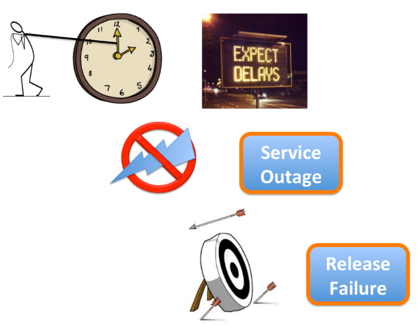Despliegues Famosos (por las consecuencias negativas)
- Negocios:
- Vancouver Stock Exchange: redondeo
- Knight Capital Group: perdieron 440 millones de dólares en 45 minutos
- Videojuegos:
- Steam: actualización borraba las carpetas personales de los usuarios
STEAMROOT="$(cd "${0%/*}" && echo $PWD)" rm -rf "$STEAMROOT/"*
Despliegues Famosos (por las consecuencias negativas)
-
Criptografía:
- Apple Computer, Inc: (Unreachable Code) aceptaba cualquier certificado digital
-
Seguimiento de Fechas:
- Bank of Queensland: incorrecta conversión de un número hexadecimal
Problemas (Producto y Proceso)
- Aprovisionamiento de Ambientes
- Despliegue de Software Manual
- Frecuencia de Despliegues
- Desplegar tarde en un ambiente Productivo
- Configuración manual de ambientes
- Inseguridad
- Ciegos frente a Fallas
Banana Corp
- Mejores devs y ops
- Nuevas características: 1 día
- Despliegues: 1 día
- Comunicación: 8 días
- Tiempo de Cíclo: 10 días
- Solicitud de mejora en tiempos
- Mejora del 50% en cada área
- Tiempo de Cíclo: 9 días
Muro de la Confusión
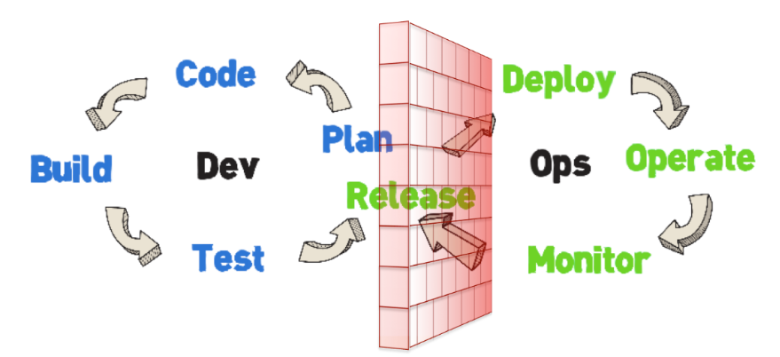Muro de la Confusión
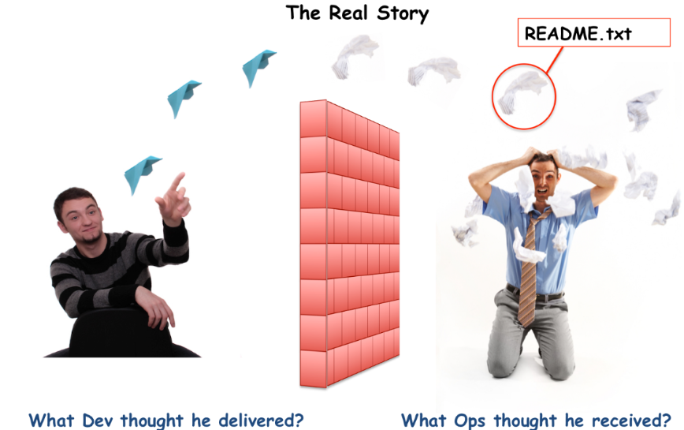Organizaciones de Alto Redimiento
¿Alguien lo ha logrado?
¿Resuelven estos problemas de la misma forma?
Organizaciones de Alto Rendimiento
- Despliegan más de 100 veces en Producción
- Los recién contratados desplieguen en Producción
State of DevOps Report
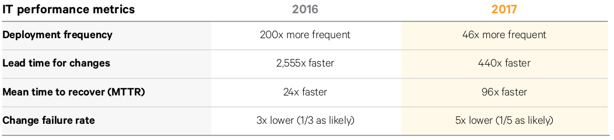No silver bullet
- Las más grandes empresas han tenido fallas
- Hacer Software es complejo
DevOps
¿DevOps?
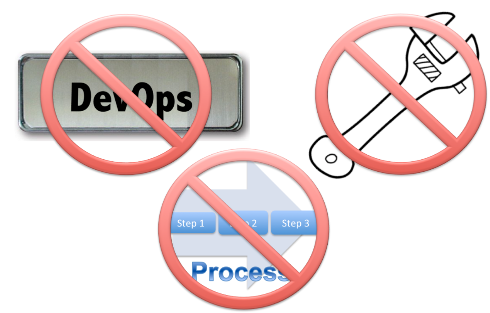Historia
- Patrick Debois
- Gene Kim
- Jez Humble
- John Willis
DevOps
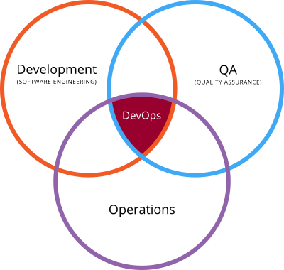¿DevSecOps?
Los tres caminos
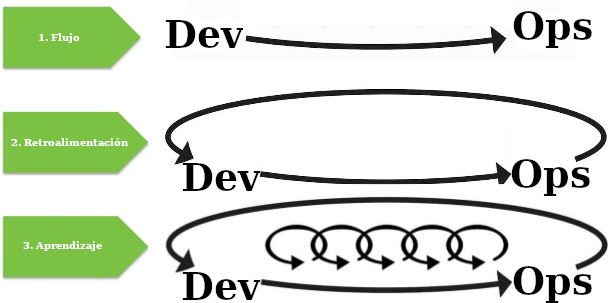Hábitos DevOps Kaizen
- Comunicación
- Pensamiento Local vs Global
- Respeto
- Confianza
- Sin Víctimas
- La prueba del olor
- Matar al Dragón
- Comportamiento sin Miedo
- Atravezar el velo de IT
- Shaman
Valores DevOps
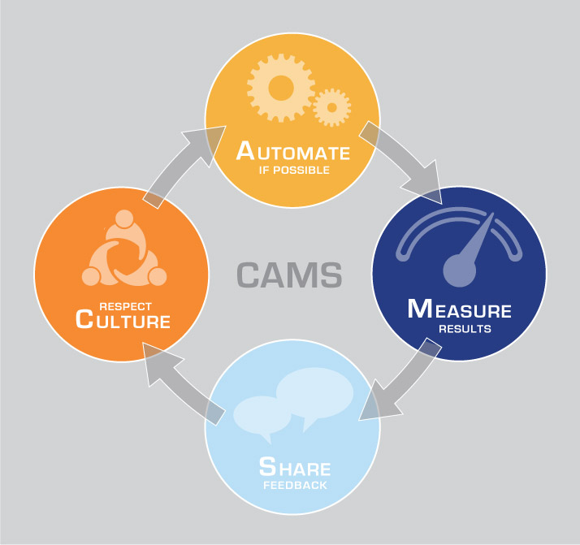DevOps
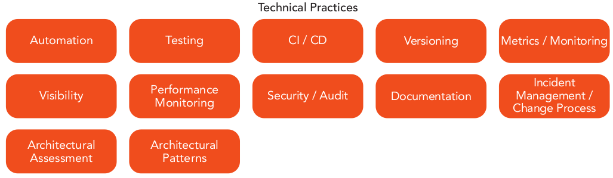 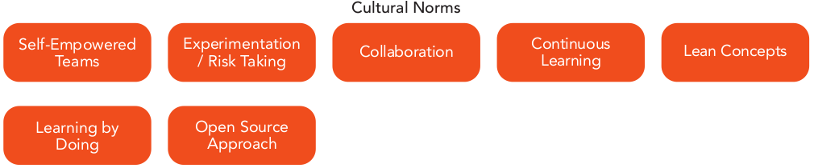DevOps como una Travesía
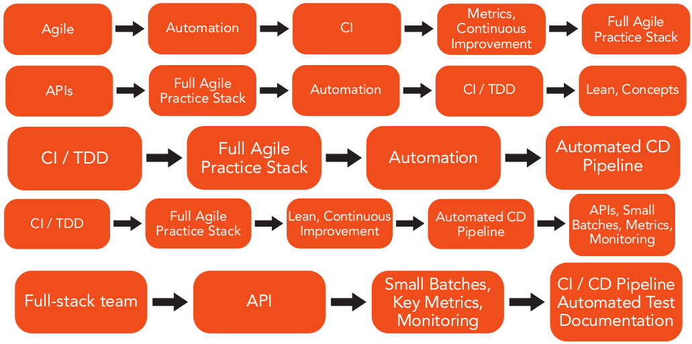State of DevOps Report

Porcentaje de trabajo realizado manualmente
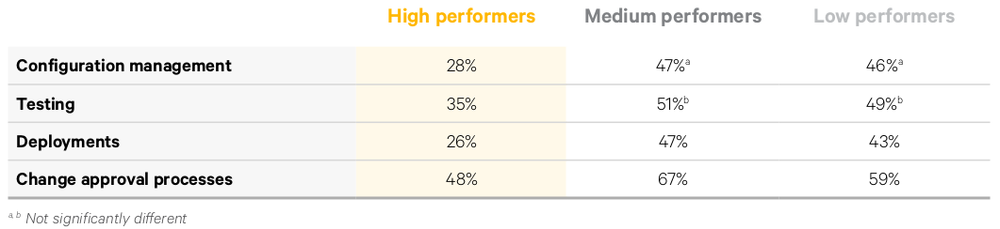Explicación de Yuji Kiriki
Explicación de Martin Fowler
Explicación de Martin Fowler
- Fenómeno Cultural
- Los Desarrolladores de Aplicaciones deben ser conscientes de las necesidades de Operación
- Las personas de Operación deben facilitar el despliegue
- Colaboración + Comunicación
DevOps
No existe un acuerdo global de su definición.
DevOps
Desarrolladores y Operaciones trabajando conjuntamente.
Desarrolladores, QA, Seguridad y Operaciones trabajando conjuntamente. (DevQASecOps ...)
DevOps
- DevOps es una Cultura de Confianza y Colaboración
- en la cual las personas usan las Herramientas adecuadas
- para automatizar
- y así poder garantizar una Entrega Continua.
¿Organizaciones de Alto Rendimiento practican DevOps?
| DevOps | SRE |
|---|---|
| Herramientas y Automatización | Automatización y Minimización de trabajo manual |
| Medir Todo | Ve Operaciones como problema de software y define formas para medir disponibilidad, tiempo de arranque, daños, latencias, etc. |
| DevOps | SRE |
|---|---|
| Minimiza Silos Organizacionales | Comparte Empoderamiento |
| Accepta Fallos | Balance de Accidentes y Fallos con Nuevas Versiones |
| Cambios Graduales | Reducir costo de Fallos |
| DevOps | SRE |
|---|---|
| Herramientas y Automatización | Automatización y Minimización de trabajo manual |
| Medir Todo | Ve Operaciones como problema de software y define formas para medir disponibilidad, tiempo de arranque, daños, latencias, etc. |
- AWS - Akamai - Netflix Open Connect
- 100s de microservicios
- 1'000s de cambios en Producción Diarios
- 10'000s instancias virtuales
- 100'000s interacciones de usuarios por segundo
- 1'000'000s interacciones de usuarios
- 1'000'000'000s de métricas en series de tiempo
- 10'000'000'000s de horas cada trimestre
- 10s ingenieros de operaciones
- 0 NOCs (Network Ops Centers)
Cultura de Netflix
- Sistemas que no dicen que no: libertad y responsabilidad
- No siempre en servicios: velocidad de inovación
- Sin procesos ni procedimientos: confianza
- Sin control: contexto
- Sin estandards: todo es permitido
- Sin muros: "usted lo crea, usted lo ejecuta en producción"
- Sin adivinar: datos
- Sin devops: cultura
- SRE
- Systems Reliability Operations
- App Ops
- Production Engineers
Production Engineer
- Trabajan en herramientas que se necesitarán
- No arreglan problemas de desarrolladores
- Monitoreo
- Automatización: operaciones debe programar
- Aprender de los Errores
DevOps en S4N
Equipo que cuenta con la experiencia y el conocimiento necesario para analizar y retroalimentar proyectos y productos de Software mejorando su:
- tiempo de entrega
- calidad
- operabilidad / administración
- visualización / transparencia
Actividad
Desde su rol dentro del proyecto de software responda:
- ¿Qué problemas ha identificado comunmente?
- ¿Cómo los solucionaría?
- ¿Qué ha hecho su equipo para solucionarlo?
- ¿Cree que hay una solución automatizable o implica un cambio de cultura o procedimientos manuales?
Dimensiones del Software
Dimensiones
Infraestructura como código
Configuración como código
Aplicaciones
Datos como código
| IaC | CaC | A | DaC | |
| Versionar | ||||
| Probar | ||||
| Asegurar |
Infraestructura como Código


Configuración como Código


 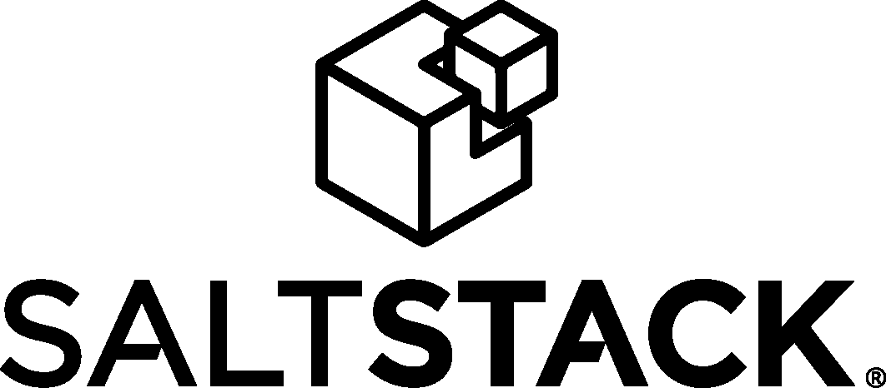
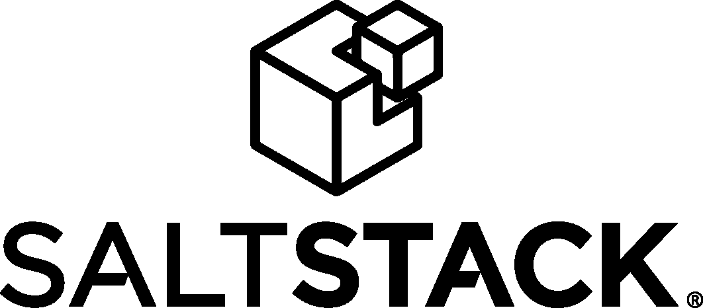
Datos como Código
Aplicaciones
| DEV | Developers |
| BUILD | Build Engineer |
| QA | QA Team |
| SIT | Integration Testers |
| UAT | User Test |
| PROD | Operations |
Conceptos
Desarrollo Ágil
Manifiesto Ágil
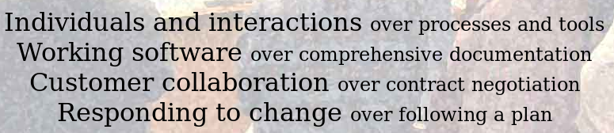12 principios
Flujo de Valor
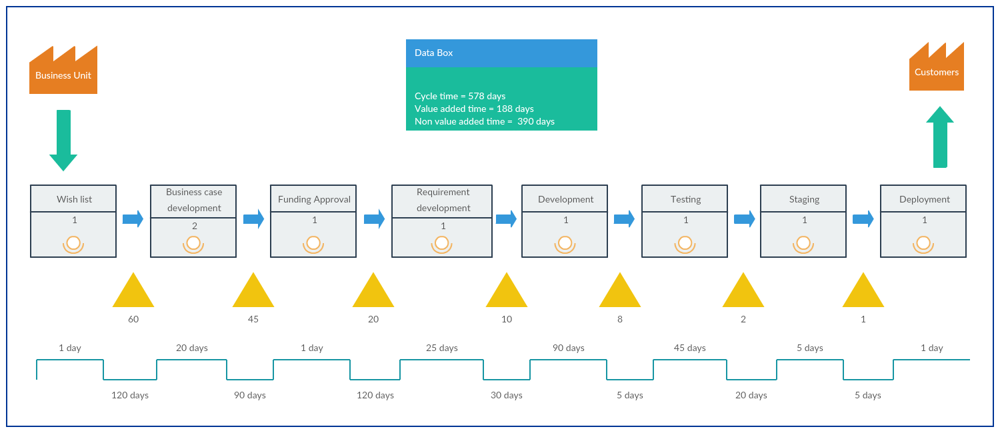CI/CD/CD
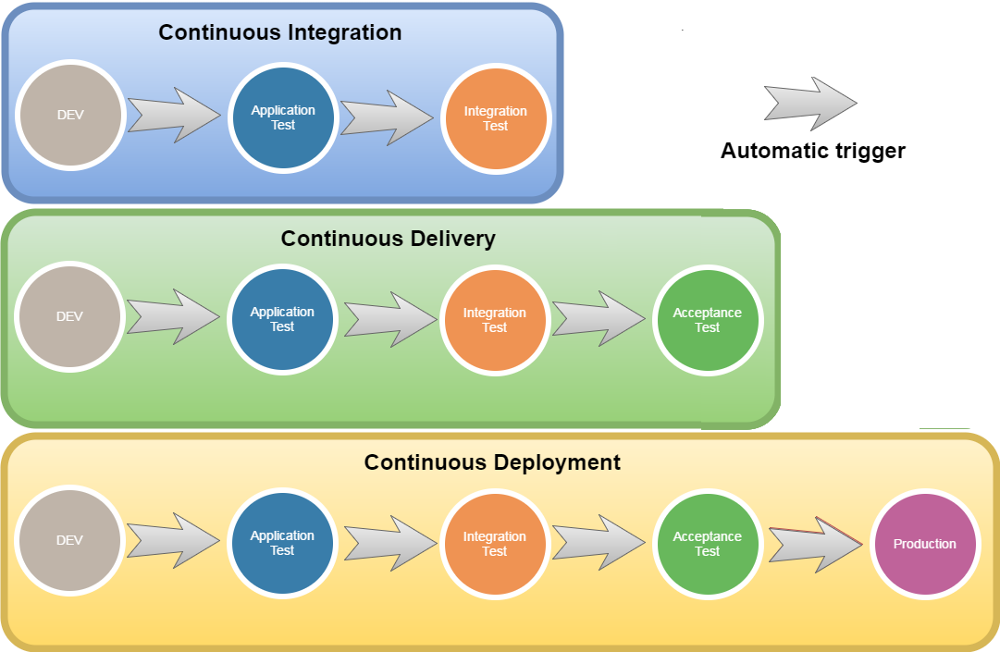Aprendizaje Continuo y Experimentación
Kaizen 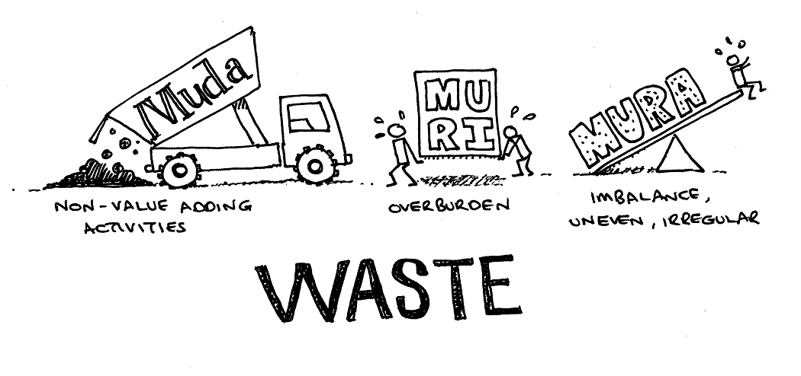Aprendizaje Continuo y Experimentación
Ciclo de Deming 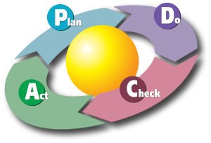Aprendizaje Continuo y Experimentación
Blameless postmortems: 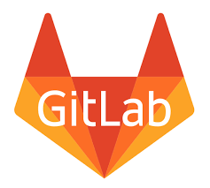
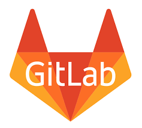
Aprendizaje Continuo y Experimentación
- Learning Management Systems
- ¿Qué tecnologías vienen?
- ¿Qué hemos probado?
- ¿Qué deberíamos probar?
- Crea tu propio radar.
Aprendizaje Continuo y Experimentación
Arquitectura de Sistemas
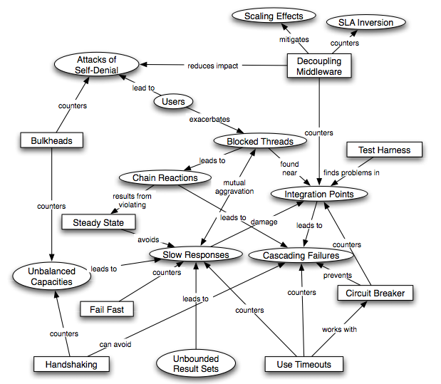Reactive Manifesto
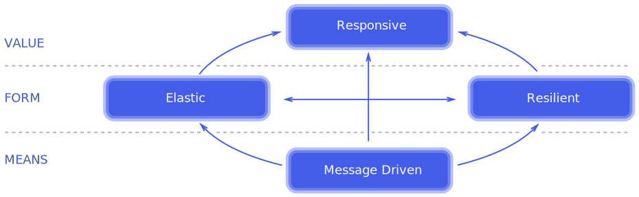Los sistemas grandes están compuestos de sistemas más pequeños y dependen de las propiedades reactivas de estos.
12 Factor app
| I. Codebase | One codebase in revision control, many deploys |
| II. Dependencies | Explicitly declare and isolate dependencies |
| III. Config | Store config in the environment |
| IV. Backing services | Treat backing services as attached resources |
12 Factor app
| V. Build, release, run | Strictly separate build and run stages |
| VI. Processes | Execute the app as one or more stateless processes |
| VII. Port binding | Export services via port binding |
| VIII. Concurrency | Scale out via the process model |
12 Factor app
| IX. Disposability | Maximize robustness: fast startup and graceful shutdown |
| X. Dev/prod parity | Keep "environments" as similar as possible |
| XI. Logs | Treat logs as event streams |
| XII. Admin processes | Run admin/management tasks as one-off processes |
Ganado vs Mascotas

Servidores Fénix vs Copo de nieve

Monitoreo y Reacción
- Monitoreo de Negocio
- Monitoreo de Aplicación
- Monitoreo de Red
- Monitoreo de Aplicaciones Externas
- Monitoreo de Infraestructura
Monitoreo y Reacción
- Definición de Umbrales
- Ejecución de Lógica
- Avisos
- Rollbacks
Retroalimentación
- Bug Tracker
- Project Management Tools
- Team Productivity
Seguridad Informática
- OpenSSL
- PGP
- TLS/SSL
- Open Web Application Security Project
- Blockchains
Less world
- Serverless
- Infrastructureless
- Opsless
- Securityless